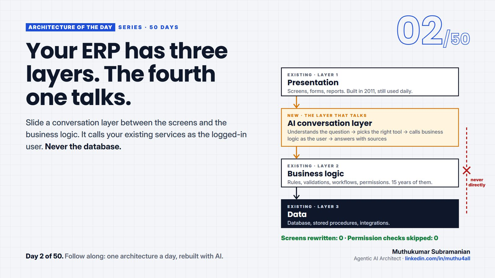

Your ERP Has Three Layers. The Fourth One Talks.
By Muthukumar Subramanian · Agentic AI Architect

Ask any finance team how they get one number out of the ERP.
Fourteen clicks. Three filters. An export to Excel. A pivot table. And if the number still isn't there, a ticket to IT for a "custom report", due in two weeks.
The number was in the system the whole time. The system just has no way to be asked.
That's the layered architecture problem in one sentence: the business logic is excellent, and the only way to reach it is a screen designed in 2011.
Yesterday we put an AI sidecar beside a monolith. Today we go one level deeper, into the architecture most enterprise apps actually use, and find the layer nobody planned for.
The architecture today
Three tiers, stacked. The presentation layer (screens, forms, reports) talks to the business logic layer (rules, validations, workflows), which talks to the data layer (the database, stored procedures, integrations). Every request goes down the stack and every answer comes back up. Clean, testable, and the reason your ERP still works after 15 years of changes.
The catch: every piece of business logic is reachable only through the screen someone built for it. No screen, no access.
👉 [IMAGE: A-day02-2-in-article-architecture.png]
Caption: The layered architecture, with the AI layer slotted in. Grey is what you already have. Amber is new.
Where AI plugs in now: the conversation layer
Slide a new layer in between presentation and business logic. Call it the conversation layer, the AI layer, or just "the layer that talks".
It does four things:
→ Understands intent. "Which purchase orders over ₹5 lakh have been waiting for approval for more than a week?" becomes a structured request.
→ Picks the right tool. Every existing business service (find orders, get vendor, post journal) is exposed once as a tool, through something like MCP.
→ Calls the business logic layer as the logged-in user. Same permissions, same validations, same audit. The layer never touches the database directly.
→ Answers in plain language, with the records it used.
That last design rule is the whole game. The AI layer calls the business layer, never the data layer. The moment someone lets the model write SQL against the production database "because it's faster", you've thrown away 15 years of validations and every permission check in the system.
The first version is read-only. Questions in, answers out. That alone removes most of the "custom report" tickets, and it's low risk because nothing can be changed.
Where it's heading with agents
Once every screen's logic is also a tool, something flips.
The screens stop being the main way work gets done. An agent prepares the month-end close by calling the same services the accountant used to click through, and the accountant reviews a summary instead of filling forms. Screens become exception views: the places you go when the agent isn't sure.
In two or three years, I expect the presentation layer of most business apps to be much thinner, the AI layer to be where most work starts, and the business logic layer to become what it always should have been: a catalogue of well-named capabilities that both people and agents call. The ERP vendors see this too. SAP is pushing Joule agents, Oracle shipped agentic Fusion applications this year, and Microsoft is turning Copilot Studio into a place to build agents over Dynamics. The question for the rest of us is what happens to the thousands of custom and older systems the vendors won't touch.
👉 [IMAGE: A-day02-3-in-article-four-rules.png]
Caption: The four rules of the AI layer. Break the first one and the other three stop mattering.
Watch it work
One question, four layers, and every permission check still runs.
👉 [GIF: A-day02-4-in-article-one-question.gif]
Caption: A question flowing through the layers. The AI layer never touches the database.
Pros
→ Reuses the business logic you already paid for, validations and permissions included
→ Read-only first, so the first release is useful and nearly risk-free
→ Each screen becomes a tool one at a time: you don't need the whole catalogue on day one
Cons
→ Old business layers often have no clean service interface, so wrapping them is real work
→ Natural language is ambiguous: "last quarter's sales" means three things in one company
→ Permission pass-through is non-negotiable, and some old apps make it hard to impersonate the user safely
The opportunity
Every mid-size company in India runs at least one business app built this way: a custom .NET or Java app, an older SAP or Oracle, Tally with a dozen add-ons, a hospital information system. None of them will be replaced soon, and none of them can be asked a question.
That's the market: "talk to your ERP" layers for legacy business apps. The buyer is the CFO or COO who is tired of waiting two weeks for a report. The seller is whoever can wrap the existing business layer as tools, add the conversation layer safely, and prove that permissions still hold. For integrators and ISVs, that's a repeatable product, not a one-off project.
Tools to try
Microsoft Copilot Studio for Dynamics and Microsoft-heavy shops · LangChain 1.0 and LangGraph for the agent runtime · Microsoft Agent Framework, which now carries Semantic Kernel and AutoGen forward · an MCP server to expose your business services as tools · any model behind a gateway: OpenAI, Claude, Gemini, or an open model where data must stay in-house.
Your turn 👇
Would you let the AI layer call your business logic, or would you insist it stays read-only for the first year? Pick one.
Tag the person in your company who still builds the "custom report" by hand every month. They'll have opinions.
Day 2 of 50 · follow along. Tomorrow: Client-server, with small models on the device and large ones on the server.